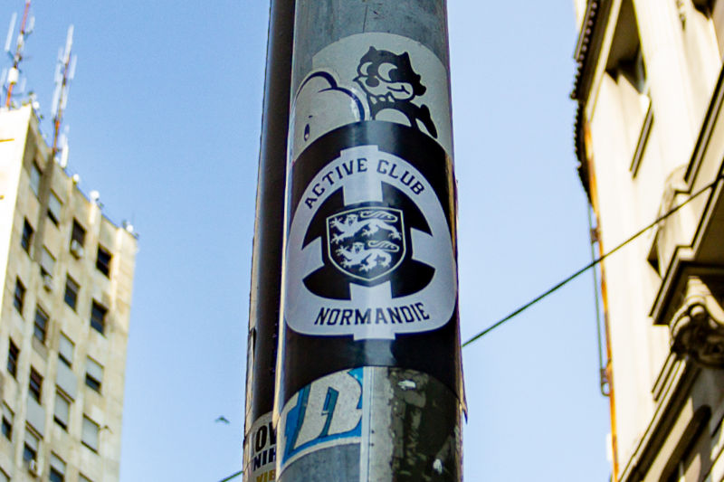

*Content warning: this challenge involves symbols used by hate groups, and some sources surfaced during research contain hateful content.* Michael spotted this sticker for an "Active Club" while on his travels. **Where was this sticker spotted, and what's the name of the target-like symbol on the sticker?** (Answer format: city, symbol name)
